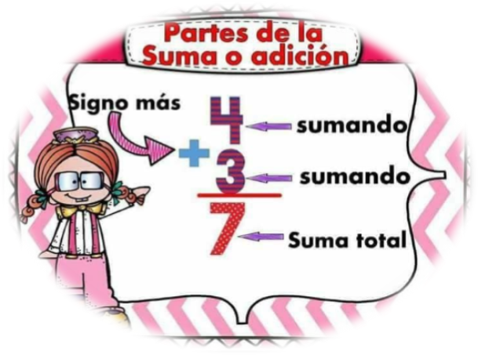

Concepto de adición y sustracción
La suma o adición y sus términos
La suma es una operación matemática básica que nos permite reunir dos o más números para obtener un resultado llamado "suma" o "total".
Los números que queremos sumar se llaman sumandos.
Utilizamos el símbolo + para indicar que estamos sumando.
El resultado de sumar los números se llama suma o total.

Imagen tomada de : ar pinteres.com
Ejemplo: 7 + 3 = 10
La resta o sustracción y sus términos.
La sustracción es una operación matemática básica que nos permite quitar una cantidad de otra para encontrar la diferencia entre ellas. Vamos a ver los elementos de una sustracción:
Los números involucrados en la sustracción son el minuendo y el sustraendo.
Utilizamos el símbolo - para indicar que estamos restando.
El resultado de restar los números se llama diferencia.

Imagen tomada de : ar pinteres.com
Ejemplo 8 - 3 = 5
Pasos para realizar resolución de problemas aditivos y sustractivos
Para resolver problemas aditivos y sustractivos, puedes seguir estos pasos:
1. Leer y comprender el problema: Asegúrate de entender bien el enunciado y lo que se pide. Identifica si es un problema de suma (aditivo) o de resta (sustractivo).
2. Identificar los datos clave: Localiza los números y datos importantes que se mencionan en el problema.
3. Determinar la operación correcta: Decide si necesitas sumar o restar para resolver el problema. A veces, un problema puede requerir ambas operaciones.
4. Organizar los datos: Escribe los números y las operaciones de manera clara para que puedas trabajar con ellos fácilmente.
5. Realizar la operación: Realiza la suma o la resta de los números que has identificado.
6. Verificar tu respuesta: Una vez que hayas obtenido una respuesta, revísala para asegurarte de que sea lógica y correcta según el enunciado del problema.
7. Escribir la respuesta final: Redacta la respuesta en una frase completa, asegurándote de que responda a la pregunta planteada.
Ejemplo de problema aditivo:
Ana tiene 15 manzanas y compra 8 más. ¿Cuántas manzanas tiene ahora en total?
Resolución:
1. Comprender el problema: Ana tiene algunas manzanas y compra más.
2. Identificar los datos: 15 manzanas y 8 más.
3. Determinar la operación: Suma (15 + 8).
4. Organizar los datos: 15 + 8.
5. Realizar la operación: 15 + 8 = 23.
6. Verificar la respuesta: Sí, la respuesta tiene sentido.
7. Escribir la respuesta final: Ana tiene 23 manzanas en total.